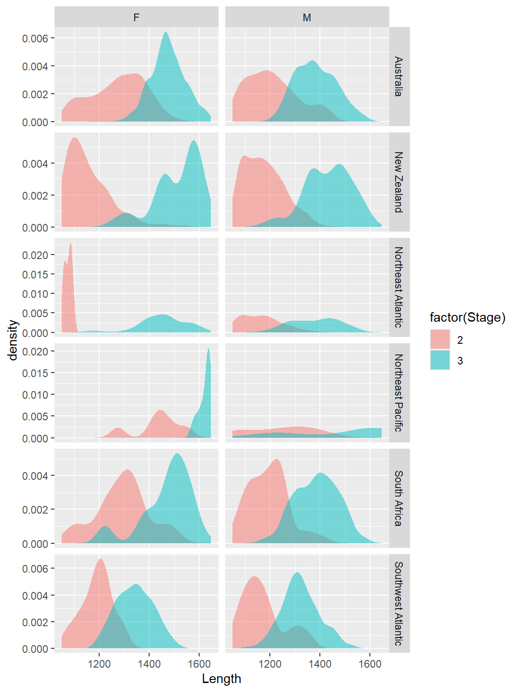
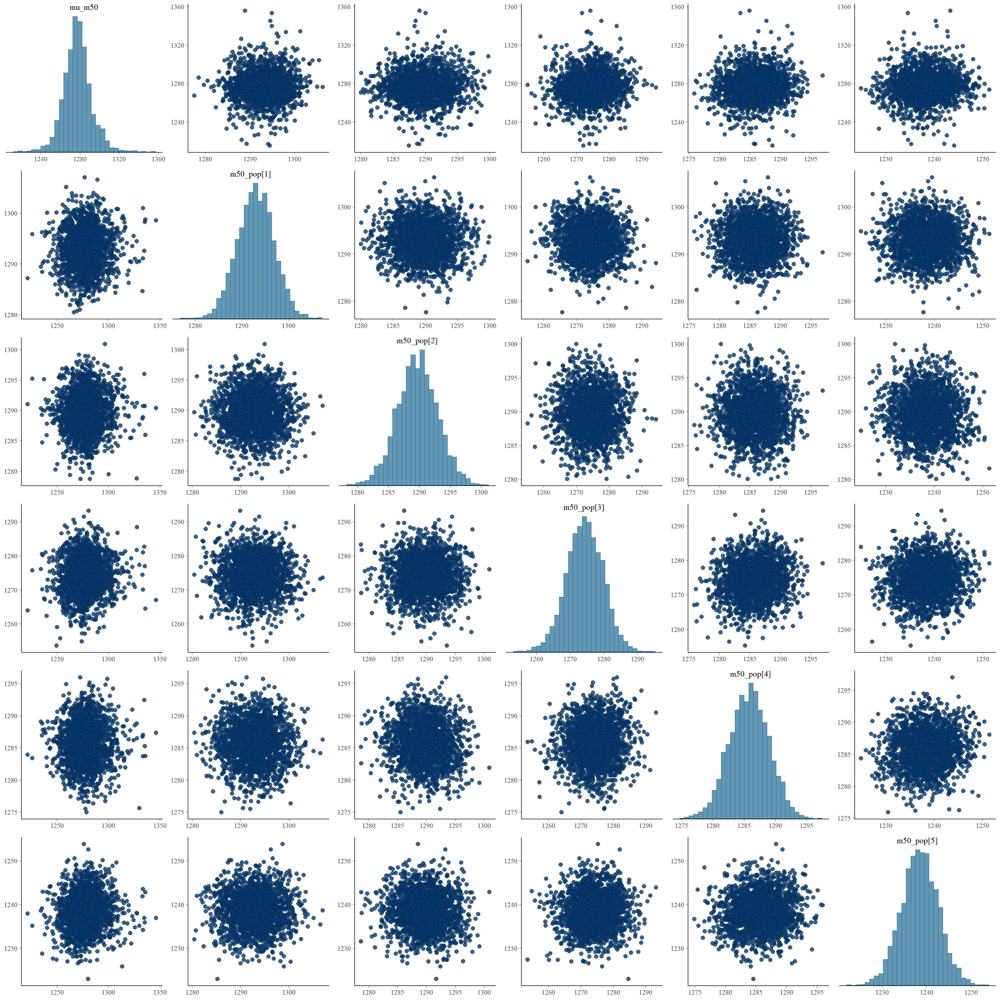

library(tidyverse)
library(rstan)
library(bayesplot)Introduction
Data
dat <- read_csv("Data/LHDC.csv") |>
filter(!(Population == "Southwest Atlantic" & !is.na(OWt))) |>
transmute(
Population,
Country,
Sex,
Stage = as_factor(LS_Score),
Length = TL
)New names:
Rows: 13495 Columns: 47
── Column specification
──────────────────────────────────────────────────────── Delimiter: "," chr
(8): ID, Source, Country, Species, Cap.gear, Sex, Population, Hemisphere dbl
(39): ...1, Cap.year, LS_Score, TL, sdtl, TWgt, sdtwgt, F.Ys.Wgt, D.T.Wg...
ℹ Use `spec()` to retrieve the full column specification for this data. ℹ
Specify the column types or set `show_col_types = FALSE` to quiet this message.
• `` -> `...1`dat |>
filter(Stage != 2.3) |>
group_by(Population, Stage, Sex) |>
summarise(n = n()) |>
pivot_wider(
names_from = Stage,
values_from = n
)`summarise()` has grouped output by 'Population', 'Stage'. You can override
using the `.groups` argument.# A tibble: 14 × 5
# Groups: Population [6]
Population Sex `1` `2` `3`
<chr> <chr> <int> <int> <int>
1 Australia F 890 850 596
2 Australia M 876 666 257
3 New Zealand F 41 2102 37
4 New Zealand M 36 2941 301
5 New Zealand <NA> 13 NA NA
6 Northeast Atlantic <NA> 23 NA NA
7 Northeast Atlantic F NA 82 30
8 Northeast Atlantic M NA 310 162
9 Northeast Pacific F 2 6 131
10 Northeast Pacific M 9 5 15
11 South Africa F NA 18 36
12 South Africa M NA 685 731
13 Southwest Atlantic F 255 149 320
14 Southwest Atlantic M 259 238 327Get Aus data
da <- dat |> filter(Population == "Australia")da |>
# filter(Length > 1100) |>
ggplot() +
aes(x = Length, fill = factor(Stage), group = Stage) +
geom_histogram() +
facet_grid(
rows = vars(Stage),
cols = vars(Sex),
scales = "free_y"
) +
ggtitle("Australian data")`stat_bin()` using `bins = 30`. Pick better value with `binwidth`.
da |>
# filter(Length > 1100) |>
ggplot() +
aes(x = Length, fill = factor(Stage), group = Stage) +
geom_histogram(position = "stack") +
facet_grid(
cols = vars(Sex),
scales = "free_y"
) +
ggtitle("Australian data")`stat_bin()` using `bins = 30`. Pick better value with `binwidth`.da |>
# filter(Length > 1100) |>
ggplot() +
aes(x = Length, fill = factor(Stage), group = Stage) +
geom_density(position = "stack", col = NA, bw=50) +
facet_grid(
cols = vars(Sex),
scales = "free_y"
) +
ggtitle("Australian data")All data
dat |>
filter(Length > 1050 & Length < 1650) |>
ggplot() +
aes(x = Length, fill = factor(Stage), group = Stage) +
geom_density(alpha = .5, col = NA) +
facet_grid(
cols = vars(Sex),
rows = vars(Population),
scales = "free_y"
) 
dat |>
filter(Length > 1050 & Length < 1650) |>
ggplot() +
aes(x = Length, fill = factor(Stage), group = Stage) +
geom_histogram(alpha = .5, col = NA, position = "stack") +
facet_grid(
cols = vars(Sex),
rows = vars(Population)
) +
ggtitle("Stacked histogram")`stat_bin()` using `bins = 30`. Pick better value with `binwidth`.dat |>
filter(Length > 1050 & Length < 1550) |>
ggplot() +
aes(x = Length, fill = factor(Stage), group = Stage) +
geom_histogram(alpha = .5, col = NA, position = "identity") +
facet_grid(
cols = vars(Sex),
rows = vars(Population)
) `stat_bin()` using `bins = 30`. Pick better value with `binwidth`.dat |>
filter(Length > 1050 & Length < 1550) |>
ggplot() +
aes(x = Length, fill = factor(Stage), group = Stage) +
geom_histogram(alpha = .5, col = NA, position = "identity") +
facet_grid(
cols = vars(Sex),
rows = vars(Population)
) `stat_bin()` using `bins = 30`. Pick better value with `binwidth`.
Set up and test model
Single population
Compile Stan Code
stan_gen04_simple <- stan_model(file = 'gen04_simple.stan')Simulate data
# Simulate data
set.seed(12345)
n0 <- 50 # Number of samples for class 0
n1 <- 5 * n0 # Number of samples for class 1
N <- n0 + n1
# Parameters for simulation
m50_true <- 1300
sigma_x_true <- 100
d_true <- 300 # Distance factor between class 0 and 1 means
# Simulated x values
mu0_true <- m50_true - d_true / 2
mu1_true <- m50_true + d_true / 2
x0 <- rnorm(n0, mean = mu0_true, sd = sigma_x_true)
x1 <- rnorm(n1, mean = mu1_true, sd = sigma_x_true)
x <- c(x0, x1)
# Simulated y values
y <- c(rep(0, n0), rep(1, n1))
# Data for Stan
data_list <- list(
N = N,
x = x,
y = y
)data.frame(x=x,y=y) |>
ggplot() +
aes(x = x, fill = factor(y), group = y) +
geom_histogram(alpha = .5, col = NA, position = "identity") `stat_bin()` using `bins = 30`. Pick better value with `binwidth`.Fit to simulated data
# Fit the model using rstan
fit <- sampling(
stan_gen04_simple,
data = data_list,
chains = 4,
# iter = 2000,
# warmup = 500,
cores = 4,
control = list(adapt_delta = 0.95)
)Try on nz data
d_nz <- dat |>
filter(Length > 1050 & Length < 1650) |>
filter(Population == "New Zealand" & Sex == "M") |>
transmute(
x = Length,
y = as.numeric(Stage == 3 )
)fit_d_nz <- sampling(
stan_gen04_simple,
data = list( N = nrow(d_nz), x = d_nz$x, y = d_nz$y ),
chains = 4,
# iter = 2000,
# warmup = 500,
cores = 4,
control = list(adapt_delta = 0.95)
)# Extract and summarize results
print(fit_d_nz, pars = c("m50", "sigma", "d"))Inference for Stan model: anon_model.
4 chains, each with iter=2000; warmup=1000; thin=1;
post-warmup draws per chain=1000, total post-warmup draws=4000.
mean se_mean sd 2.5% 25% 50% 75% 97.5% n_eff Rhat
m50 1303.81 0.06 3.33 1297.27 1301.64 1303.82 1306.01 1310.29 2977 1
sigma 86.08 0.04 2.21 81.81 84.58 86.07 87.55 90.39 3609 1
d 255.69 0.11 6.53 242.96 251.36 255.74 260.12 268.44 3517 1
Samples were drawn using NUTS(diag_e) at Thu Oct 10 09:19:49 2024.
For each parameter, n_eff is a crude measure of effective sample size,
and Rhat is the potential scale reduction factor on split chains (at
convergence, Rhat=1).# Extract and summarize results
print(fit_d_nz, pars = c("m50", "sigma", "d"))Inference for Stan model: anon_model.
4 chains, each with iter=2000; warmup=1000; thin=1;
post-warmup draws per chain=1000, total post-warmup draws=4000.
mean se_mean sd 2.5% 25% 50% 75% 97.5% n_eff Rhat
m50 1303.81 0.06 3.33 1297.27 1301.64 1303.82 1306.01 1310.29 2977 1
sigma 86.08 0.04 2.21 81.81 84.58 86.07 87.55 90.39 3609 1
d 255.69 0.11 6.53 242.96 251.36 255.74 260.12 268.44 3517 1
Samples were drawn using NUTS(diag_e) at Thu Oct 10 09:19:49 2024.
For each parameter, n_eff is a crude measure of effective sample size,
and Rhat is the potential scale reduction factor on split chains (at
convergence, Rhat=1).# Plot posterior distribution of m50
posterior_d_nz <- extract(fit_d_nz)$m50
ggplot(data.frame(m50 = posterior_d_nz), aes(x = m50)) +
geom_density() +
ggtitle("Posterior distribution of m50 for NZ males") +
theme_minimal()J populations
Compile Stan code
stan_gen04_populations <- stan_model(file = 'gen04_populations.stan')Simulate data
# Simulate some data
set.seed(123)
N <- 1000 # Total number of data points
J <- 5 # Number of populations
pop <- sample(1:J, N, replace = TRUE)
# Generate data for each population
mu_m50 <- 1300
d <- 200
mu_mu0 <- mu_m50 - d / 2
mu_mu1 <- mu_m50 + d / 2
sigma_alpha <- 20
sigma_x <- 50
mu0_pop <- rnorm(J, mu_mu0, sigma_alpha)
mu1_pop <- rnorm(J, mu_mu1, sigma_alpha)
x <- numeric(N)
y <- rbinom(N, 1, 0.5)
for (i in 1:N) {
if (y[i] == 0) {
x[i] <- rnorm(1, mean=mu0_pop[pop[i]], sd=sigma_x)
} else {
x[i] <- rnorm(1, mean=mu1_pop[pop[i]], sd=sigma_x)
}
}
# Prepare data for Stan
data_list_populations <- list(
N = N,
x = x,
y = y,
J = J,
pop = pop
)Fit to simulated data
# Fit the model using rstan
fit_populations <- sampling(
stan_gen04_populations,
data = data_list_populations,
chains = 4,
# iter = 2000,
# warmup = 500,
cores = 4,
control = list(adapt_delta = 0.95)
)Error in eval(expr, envir, enclos) :
Exception: variable does not exist; processing stage=data initialization; variable name=prior_mu_m50_mu; base type=int (in 'string', line 7, column 2 to column 31)failed to create the sampler; sampling not doneMaturity
Fit to actual data
Prepare data
d_pop <- dat |>
filter(Length > 1050 & Length < 1550 & Sex == "M" & Population != "Northeast Pacific") |>
transmute(
x = Length,
y = as.numeric(Stage == 3),
pop = Population |> as.factor() |> as.numeric()
)popkey <- dat |>
filter( Population != "Northeast Pacific" ) |>
transmute(
pop = Population |> as.factor() |> as.numeric(),
key = Population
) |>
unique() |>
arrange(pop)
popkey# A tibble: 5 × 2
pop key
<dbl> <chr>
1 1 Australia
2 2 New Zealand
3 3 Northeast Atlantic
4 4 South Africa
5 5 Southwest AtlanticFit model
fit_d_pop <- sampling(
stan_gen04_populations,
data = list(
N = nrow(d_pop),
x = d_pop$x,
y = d_pop$y,
pop = d_pop$pop,
J = n_distinct(d_pop$pop),
prior_mu_m50_mu = 1300,
prior_mu_m50_sigma = 100,
prior_d_mu = 200,
prior_d_sigma = 50,
prior_sigma_x_sigma = 50,
prior_sigma_alpha_sigma = 50
),
chains = 4,
# iter = 2000,
# warmup = 500,
cores = 4,
control = list(adapt_delta = 0.95)
)Warning: There were 1 divergent transitions after warmup. See
https://mc-stan.org/misc/warnings.html#divergent-transitions-after-warmup
to find out why this is a problem and how to eliminate them.Warning: Examine the pairs() plot to diagnose sampling problemsfit_d_popInference for Stan model: anon_model.
4 chains, each with iter=2000; warmup=1000; thin=1;
post-warmup draws per chain=1000, total post-warmup draws=4000.
mean se_mean sd 2.5% 25% 50% 75%
mu_m50 1277.42 0.48 14.26 1250.08 1268.88 1277.19 1284.96
d 195.03 0.07 3.75 187.85 192.51 194.95 197.52
sigma_x 84.96 0.02 1.15 82.71 84.18 84.92 85.73
z[1] 0.61 0.02 0.53 -0.36 0.25 0.60 0.95
z[2] 0.49 0.02 0.50 -0.44 0.16 0.47 0.81
z[3] -0.10 0.01 0.47 -1.03 -0.43 -0.11 0.22
z[4] 0.34 0.02 0.48 -0.59 0.02 0.34 0.66
z[5] -1.48 0.02 0.68 -2.91 -1.91 -1.44 -1.01
sigma_alpha 30.26 0.44 13.14 13.91 21.03 27.36 36.07
alpha[1] 15.54 0.48 14.60 -14.62 7.38 15.75 24.51
alpha[2] 12.29 0.48 14.50 -17.57 4.45 12.30 20.93
alpha[3] -3.13 0.48 14.87 -33.94 -11.50 -2.84 5.93
alpha[4] 8.37 0.48 14.47 -21.99 0.49 8.83 16.99
alpha[5] -38.95 0.48 14.62 -69.82 -46.87 -38.43 -30.08
m50_pop[1] 1292.96 0.06 3.90 1285.37 1290.36 1293.04 1295.61
m50_pop[2] 1289.71 0.05 3.25 1283.25 1287.52 1289.68 1291.85
m50_pop[3] 1274.30 0.08 5.41 1263.56 1270.74 1274.31 1277.97
m50_pop[4] 1285.79 0.05 3.16 1279.49 1283.65 1285.85 1287.97
m50_pop[5] 1238.47 0.06 4.11 1230.44 1235.78 1238.48 1241.27
mu0_pop[1] 1195.45 0.07 4.31 1186.87 1192.57 1195.50 1198.29
mu0_pop[2] 1192.20 0.05 3.52 1185.22 1189.84 1192.19 1194.60
mu0_pop[3] 1176.78 0.10 5.93 1165.01 1172.77 1176.85 1180.83
mu0_pop[4] 1188.27 0.07 4.29 1179.83 1185.38 1188.29 1191.16
mu0_pop[5] 1140.96 0.08 4.88 1131.13 1137.74 1141.04 1144.21
mu1_pop[1] 1390.48 0.07 4.35 1382.03 1387.52 1390.58 1393.42
mu1_pop[2] 1387.23 0.07 3.96 1379.58 1384.51 1387.17 1389.92
mu1_pop[3] 1371.81 0.08 5.51 1360.88 1368.13 1371.82 1375.52
mu1_pop[4] 1383.30 0.04 2.93 1377.53 1381.35 1383.28 1385.37
mu1_pop[5] 1335.99 0.06 4.12 1327.98 1333.23 1336.04 1338.76
lp__ -15881.29 0.09 2.58 -15887.26 -15882.73 -15880.92 -15879.41
97.5% n_eff Rhat
mu_m50 1307.03 899 1.01
d 202.30 2594 1.00
sigma_x 87.25 3155 1.00
z[1] 1.68 871 1.00
z[2] 1.50 863 1.01
z[3] 0.82 1128 1.00
z[4] 1.29 886 1.01
z[5] -0.25 1160 1.00
sigma_alpha 64.93 895 1.00
alpha[1] 43.39 940 1.01
alpha[2] 40.99 920 1.01
alpha[3] 25.62 942 1.01
alpha[4] 35.89 909 1.01
alpha[5] -11.25 909 1.01
m50_pop[1] 1300.39 4421 1.00
m50_pop[2] 1296.05 4680 1.00
m50_pop[3] 1284.86 4299 1.00
m50_pop[4] 1291.82 4233 1.00
m50_pop[5] 1246.68 4595 1.00
mu0_pop[1] 1203.96 3866 1.00
mu0_pop[2] 1199.14 4343 1.00
mu0_pop[3] 1188.11 3820 1.00
mu0_pop[4] 1196.71 3398 1.00
mu0_pop[5] 1150.51 4019 1.00
mu1_pop[1] 1398.85 4077 1.00
mu1_pop[2] 1395.00 3699 1.00
mu1_pop[3] 1382.39 4249 1.00
mu1_pop[4] 1388.96 4357 1.00
mu1_pop[5] 1344.06 4539 1.00
lp__ -15877.43 884 1.00
Samples were drawn using NUTS(diag_e) at Thu Oct 10 09:22:10 2024.
For each parameter, n_eff is a crude measure of effective sample size,
and Rhat is the potential scale reduction factor on split chains (at
convergence, Rhat=1).popkey |>
bind_cols(m50 = c(1292.91,1289.70,1274.39,1285.80,1238.32 ))# A tibble: 5 × 3
pop key m50
<dbl> <chr> <dbl>
1 1 Australia 1293.
2 2 New Zealand 1290.
3 3 Northeast Atlantic 1274.
4 4 South Africa 1286.
5 5 Southwest Atlantic 1238.Checking
check_hmc_diagnostics(fit_d_pop)
Divergences:1 of 4000 iterations ended with a divergence (0.025%).
Try increasing 'adapt_delta' to remove the divergences.
Tree depth:0 of 4000 iterations saturated the maximum tree depth of 10.
Energy:E-BFMI indicated no pathological behavior.fit_d_pop |>
mcmc_pairs(
pars = c(
"mu_m50",
# "m50_pop[1]", "m50_pop[2]","m50_pop[3]","m50_pop[4]","m50_pop[5]","m50_pop[6]",
"d", "sigma_x", "sigma_alpha")
)fit_d_pop |>
mcmc_pairs(
pars = c(
"mu_m50",
"m50_pop[1]", "m50_pop[2]","m50_pop[3]","m50_pop[4]","m50_pop[5]"
# "d", "sigma_x", "sigma_alpha"
)
)
fit_d_pop |>
mcmc_pairs(
pars = c(
"mu_m50",
"alpha[1]", "alpha[2]","alpha[3]","alpha[4]","alpha[5]",
"d",
"sigma_x",
"sigma_alpha"
)
)mcmc_areas(
fit_d_pop |> as.matrix(),
pars = c("mu_m50", "m50_pop[1]", "m50_pop[2]", "m50_pop[3]", "m50_pop[4]", "m50_pop[5]"),
prob = 0.8
) +
scale_y_discrete(
labels = c(
"mu_m50" = "Overall mean",
"m50_pop[1]" = popkey$key[1],
"m50_pop[2]" = popkey$key[2],
"m50_pop[3]" = popkey$key[3],
"m50_pop[4]" = popkey$key[4],
"m50_pop[5]" = popkey$key[5])) +
xlab("Transition length")Scale for y is already present.
Adding another scale for y, which will replace the existing scale.Birth
dat |>
filter( Length < 500 & !is.na(Sex) ) |>
ggplot() +
aes(x = Length, fill = factor(Stage), group = Stage) +
geom_density(alpha = .5, col = NA) +
facet_grid(
cols = vars(Sex),
rows = vars(Population),
scales = "free_y"
) dat |>
filter( Length < 500 & !is.na(Sex) ) |>
ggplot() +
aes(x = Length, fill = factor(Stage), group = Stage) +
geom_histogram(alpha = .5, col = NA, position = "identity") +
facet_grid(
cols = vars(Sex),
rows = vars(Population)
) `stat_bin()` using `bins = 30`. Pick better value with `binwidth`.dat |>
filter( Length > 150 & Length < 450 ) |>
ggplot() +
aes(x = Length, fill = factor(Stage), group = Stage) +
geom_histogram(alpha = .5, col = NA, position = "identity") +
facet_grid(
rows = vars(Population)
) `stat_bin()` using `bins = 30`. Pick better value with `binwidth`.